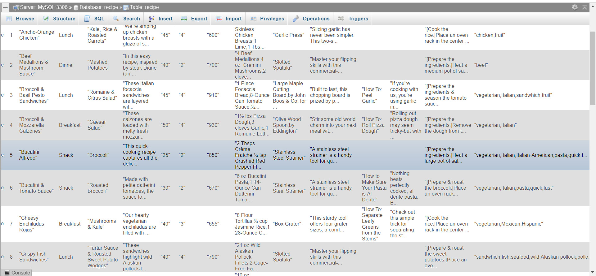
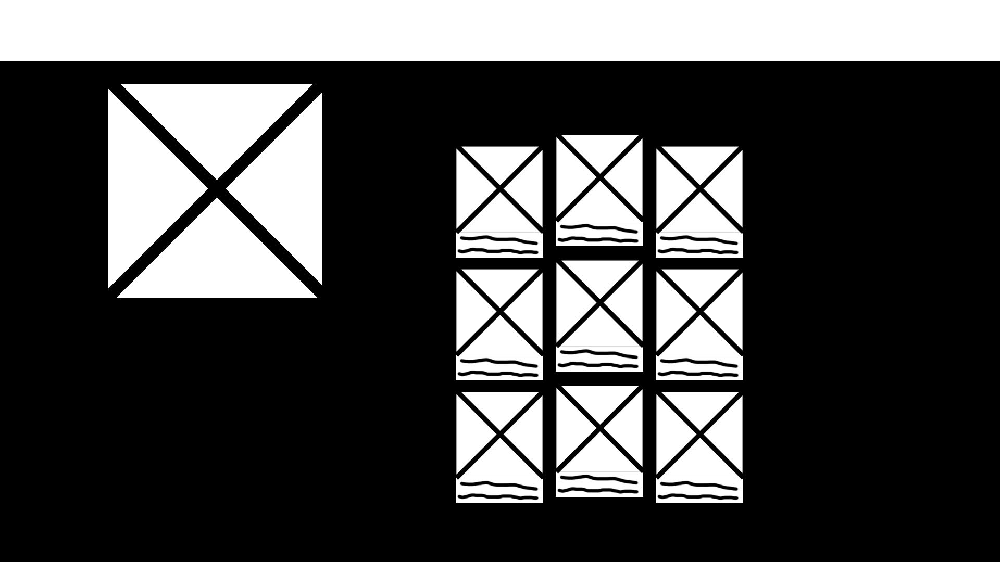
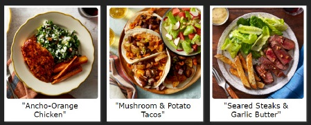
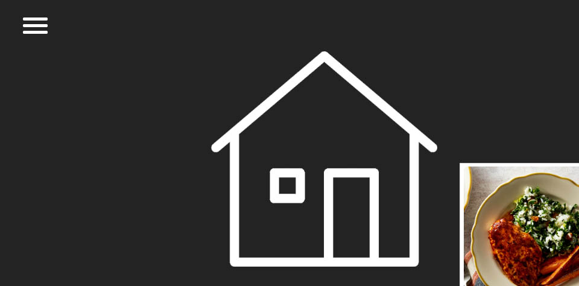
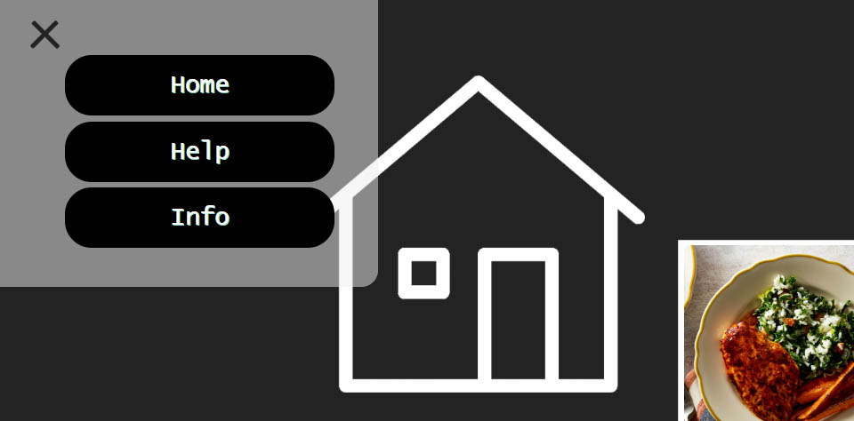

Overview
Given ten weeks to develop a website using HTML, CSS, PHP, and optionally JavaScript, I created a simple, modern design for a recipe website. I learned PHP, implemented it into my grid design and make a working recipe site with about 40 recipes in a database.
Context / Challenge
This project was focused around using PHP and either MAMP or WAMP to produce a website for around 40 recipes. These recipes came with JPGs, PNGs, and PDFs that carried all of the information required for this project. We were given about ten weeks from the start to the end of a term during Drexel's Spring term.
The purpose of this project was to both teach and get familiar with PHP and loops in coding. This project also helped students to become used to creating, updating and maintaining databases for MySQL.
Process
For the project, due to the short timeline given and the brand new coding language to learn and use, I knew that I had to focus on learning PHP. My HTML and CSS was simple and kept to a minimum so more time could be focused on a working PHP recipe site.
From my first few sketches, I knew a grid design would be easiest for both visual appeal and for an ever-updating database of recipes in case this happened to be an offical site.
My CSS grid design was inspired from a recipe app my mother had on her phone. Each recipe had a picture-like button leading to the page. I liked this design and brought in into my design.
I decided against a top navbar for this site due to the lack of amount of tabs we'd need, so I decided a hamburger icon to hide the not-so-important tabs and pages.
 Solution
Recipe SiteWith my final project, I wanted the navigation structure to be simple and sleek with a basic grid desgin. My content strategy was based around the idea that this database would continue to grow so, the grid design was fluid and simple enough to allow any more additions to the recipe amount. While yes, the overall design and apperance is basic, I was most focused on PHP implementation and the usibility of the site.
Results
As a whole, my project was a success. The learning and implementation of PHP was a challenge but once I got the hang of it, it was quickly added to my project and is working as expected. I do intend to perform UX and User testing with my site and get feedback to update. With what I learned from this project, I can further improve my ideas for other grid designs I have thought of.